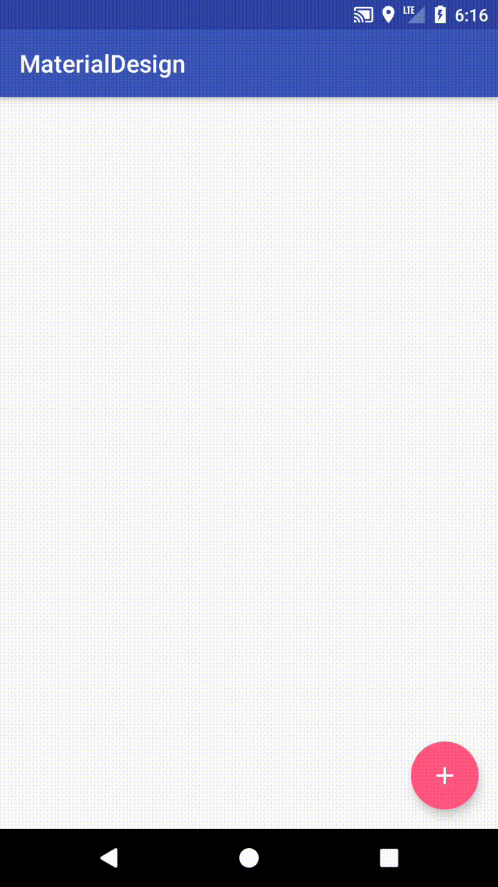
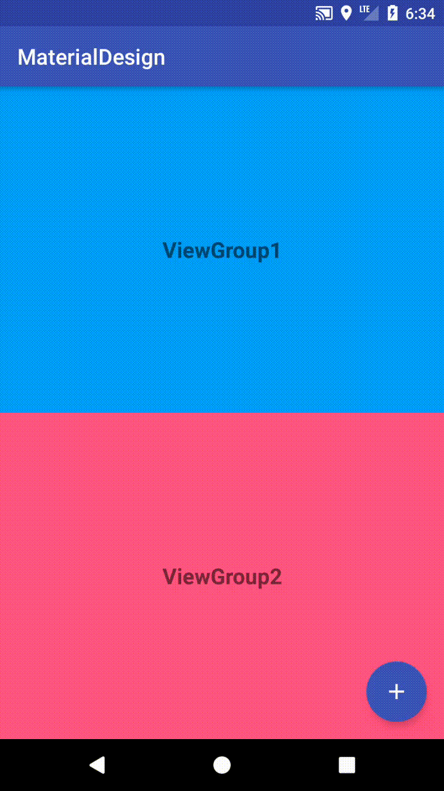
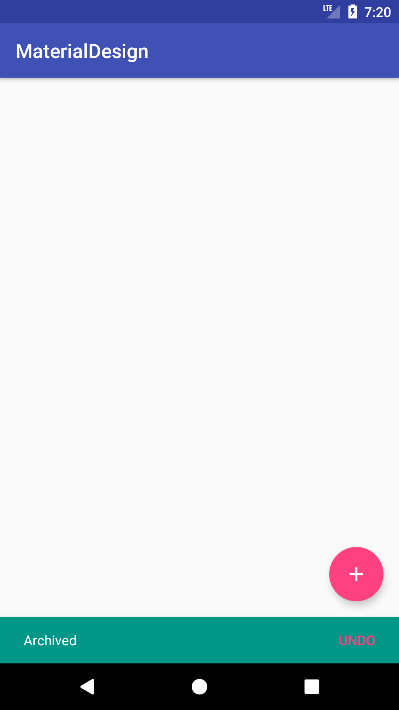
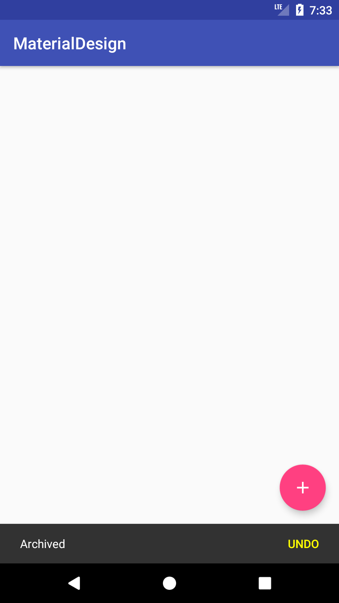

Introduction
在Android開發中，每次當想要像用戶顯示一些訊息，我們可能會選擇Toast，但Toast使用起來卻有一些限制，不能在文本訊息顯示的同時，包含一些文本的操作，Google在support:design library下，推出了Snackbar可以讓使用者在文本訊息的使用上更美觀，同時擁有更多的彈性
Snackbar與Toast同時都為顯示在螢幕底部的文本訊息，Snackbar擁有以下特性：
1.只能顯示文字，無法添加icon
2.同時只能顯示單一個Snackbar，需連續顯示時，會等上一個dismiss後，才顯示
3.只能定義一個action，且功能不是取消，如果需要兩個以上的action，請使用Dialogs
接下來我們就來實作Snackbar
Create a Snackbar
要使用Snackbar，首先需要把support:design library添加進我們的Project中，在 File -> Project Structure -> Dependencles 下新增。

接下來在代碼中使用Snackbar，第一個參數view必須傳入對應的根佈局，第二的參數是顯示文字，第三個參數是顯示的時間。
1
| Snackbar.make(@NonNull View view, @NonNull CharSequence text, @Duration int duration).show();
|
1
2
| View rootView = findViewById(R.id.activity_main);
Snackbar.make(rootView, "Archived", Snackbar.LENGTH_LONG).show();
|
也可以透過代碼指定Snackbar持續的時間
1
2
3
| snackbar = Snackbar.make(root, "Archived", Snackbar.LENGTH_INDEFINITE);
snackbar.setDuration(3000);
snackbar.show();
|
運行效果如下：

Create a Snackbar Using CoordinatorLayout
如果同時使用 FloatingActionButton 與 Snackbar，會發現 Snackbar 高度會覆蓋 FloatingActionButton，如果要解決這個問題，就要使用 CoordinatorLayout
activity佈局如下，把FloatingActionButton放進CoordinatorLayouttag裡
layout:
1
2
3
4
5
6
7
8
9
10
11
12
13
14
15
16
17
18
19
20
21
22
23
24
25
| <?xml version="1.0" encoding="utf-8"?>
<android.support.constraint.ConstraintLayout
xmlns:android="http://schemas.android.com/apk/res/android"
xmlns:app="http://schemas.android.com/apk/res-auto"
android:layout_width="match_parent"
android:layout_height="match_parent"
android:id="@+id/activity_main">
<android.support.design.widget.CoordinatorLayout
android:layout_width="match_parent"
android:layout_height="match_parent">
<android.support.design.widget.FloatingActionButton
android:id="@+id/fab_btn"
android:layout_width="wrap_content"
android:layout_height="wrap_content"
android:layout_gravity="bottom|end"
android:layout_margin="16dp"
android:src="@drawable/ic_add_white_24dp"
app:fabSize="normal" />
</android.support.design.widget.CoordinatorLayout>
</android.support.constraint.ConstraintLayout>
|
java:
1
2
3
4
5
6
| floatingActionButton.setOnClickListener(new View.OnClickListener() {
@Override
public void onClick(View view) {
Snackbar.make(view, "Archived", Snackbar.LENGTH_SHORT).show();
}
});
|
運行效果如下：

搭配CoordinatorLayout，可以使Snackbar出現在任何ViewGroup的底部，做出下方效果

Add an Action to the Snackbar
如果要添加文字訊息對應的 action 操作的話，可以使用 setAction() 方法
1
| snackbar.setAction(CharSequence text, final View.OnClickListener listener);
|
java:
1
2
3
4
5
6
7
8
9
| snackbar = Snackbar.make(rootView, "Archived", Snackbar.LENGTH_INDEFINITE);
snackbar.setDuration(5000);
snackbar.setAction("UNDO", new View.OnClickListener() {
@Override
public void onClick(View v) {
}
});
snackbar.show();
|
運行效果如下：
Customize the Snackbar
如要改變Snackbar的含背景、訊息文字、按鈕文字顏色，則需要在呼叫**show()**方法前，增加以下代碼
1.背景顏色
java:
1
2
3
4
|
View view = snackbar.getView();
view.setBackgroundColor(ContextCompat.getColor(MainActivity.this, R.color.colorSnackbarBackground));
|
運行效果如下：

2.訊息文字顏色
java:
1
2
3
4
|
TextView textView = snackbar.getView().findViewById(android.support.design.R.id.snackbar_text);
textView.setTextColor(ContextCompat.getColor(MainActivity.this, R.color.colorSnackbarText));
|
運行效果如下：

3.Action文字顏色
java:
1
2
3
4
|
TextView textView = snackbar.getView().findViewById(android.support.design.R.id.snackbar_action);
textView.setTextColor(ContextCompat.getColor(MainActivity.this, R.color.colorSnackbarAction));
|
運行效果如下：

參考網站:
Android Snackbar
Material Design Snackbars & toasts